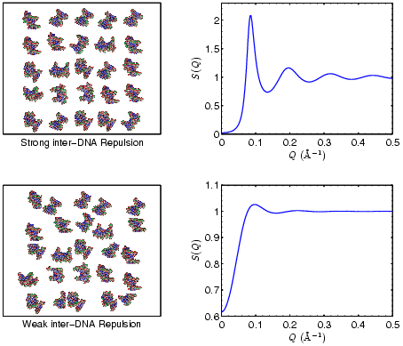
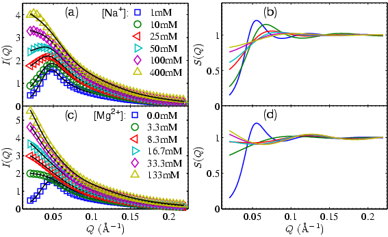
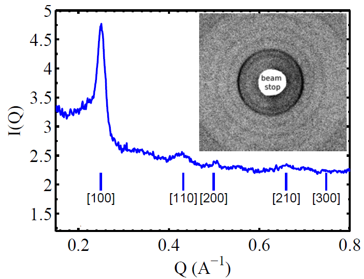

 |
| Figure 1: Demonstration of the relationship between
inter-DNA forces and their spatial correlations in term of the structure factor S(Q). |
 |
| Figure 2: Experimental SAXS profiles showing
the tuning of inter-DNA forces with DNA concentrations around 0.6mM. (a) and (c) show the raw I(Q)s with offset for clarity. I(Q)=S(Q)*P(Q), where P(Q) is the form factor. Dark lines are the fits. (b) and (d) show the S(Q)s corresponding to (a) and (c) respectively. Weakening of the inter-DNA repulsion is indicated upon increasing salt concentrations. Further more, the low Q upturns in S(Q) at [Mg2+] > 16mM evidence attraction. |
|  |
| Figure 3: X-ray diffraction data of liquid crystalline DNA. |